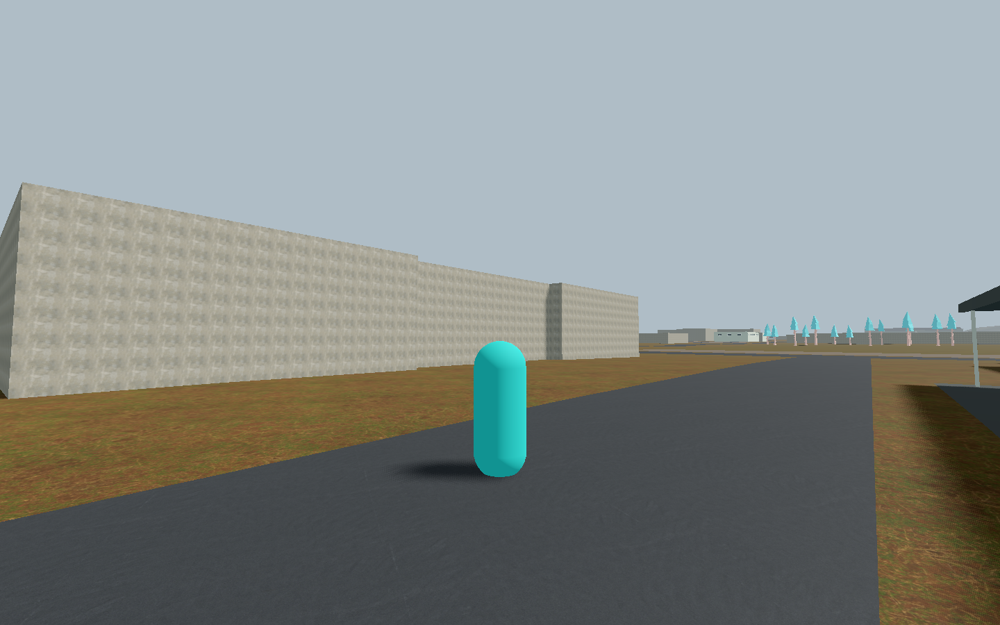
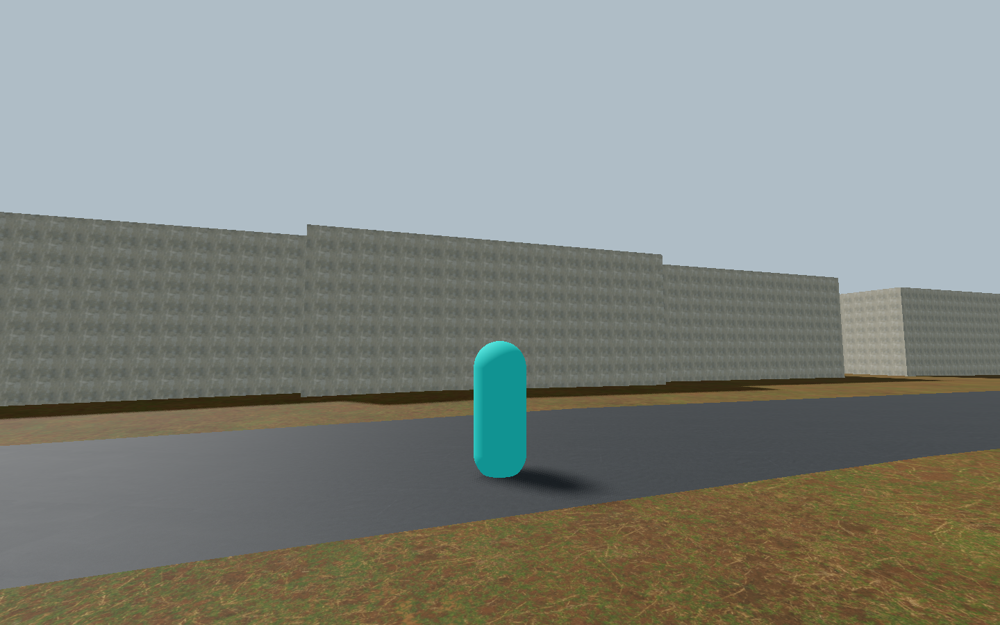
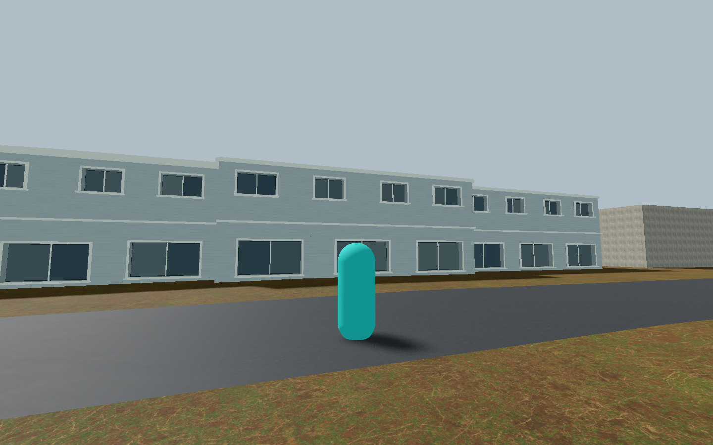
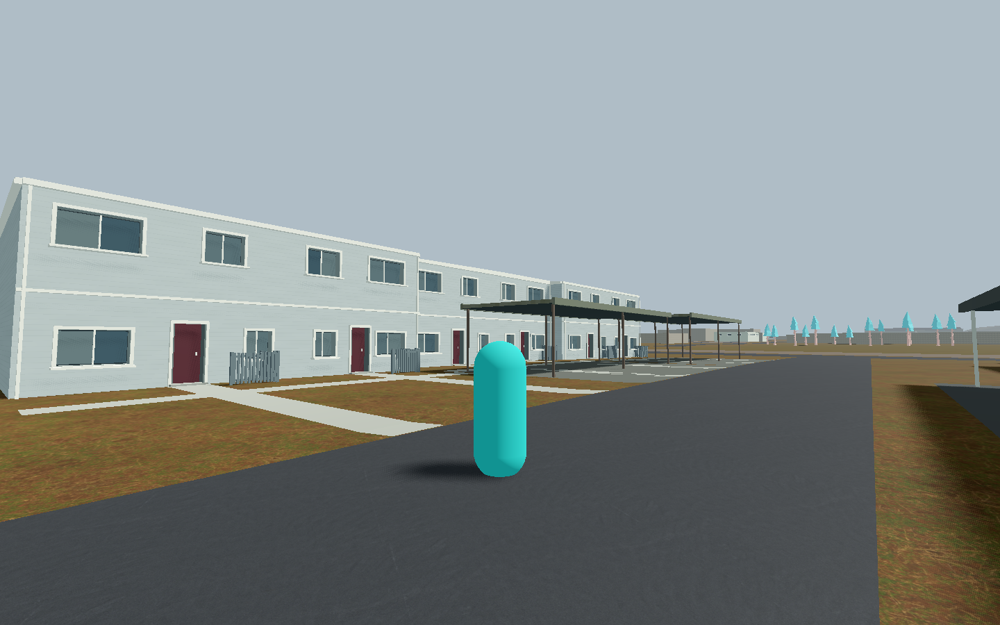
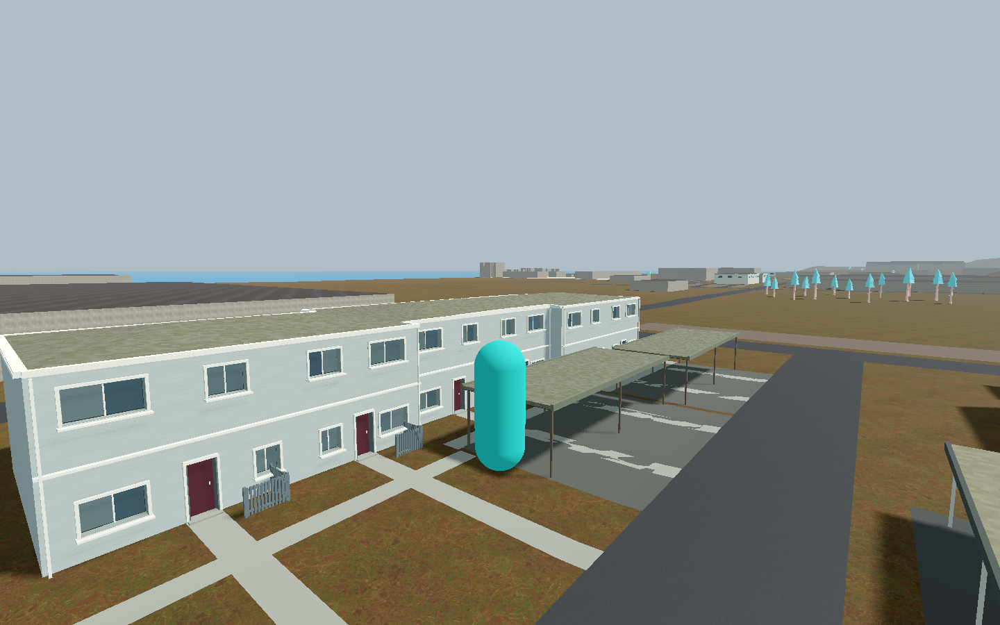
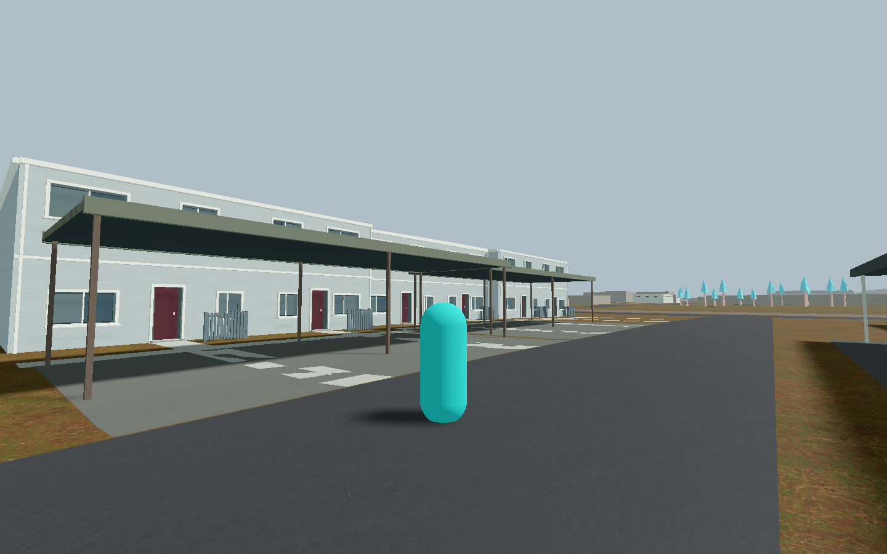

Final002 scoped visual/source/mechanics PASS. Production remains33 family /43 recognized. Release pending. Scope and provenance · All drafts





Later reconstructed config retained; not a contemporaneous source receipt.
